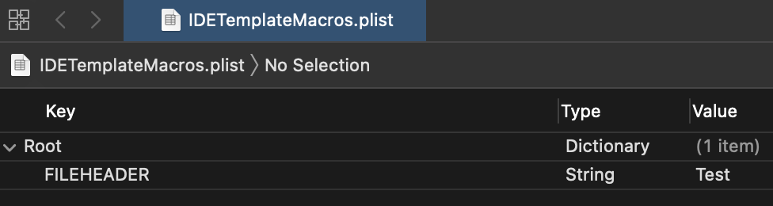
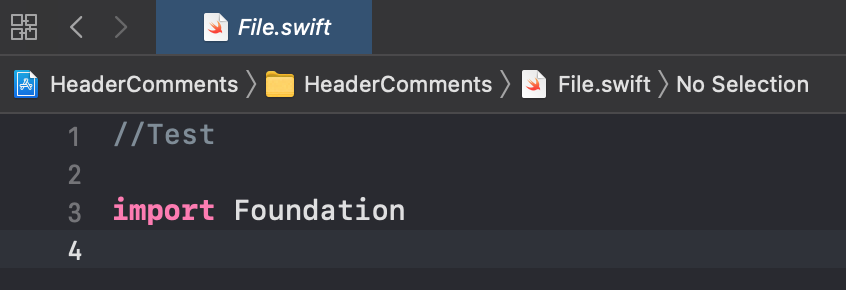
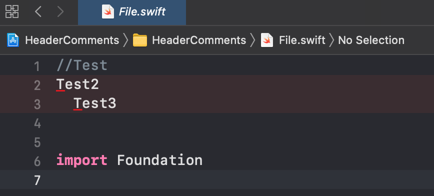
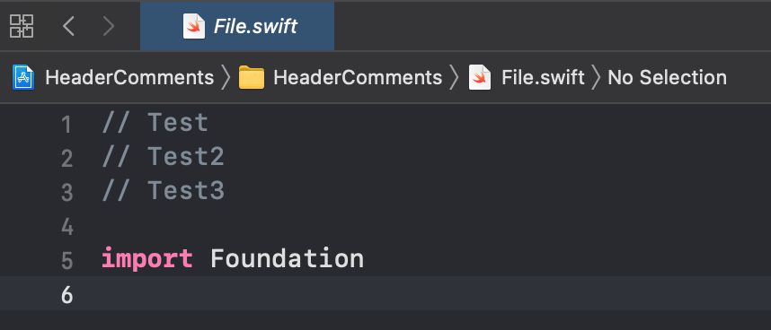
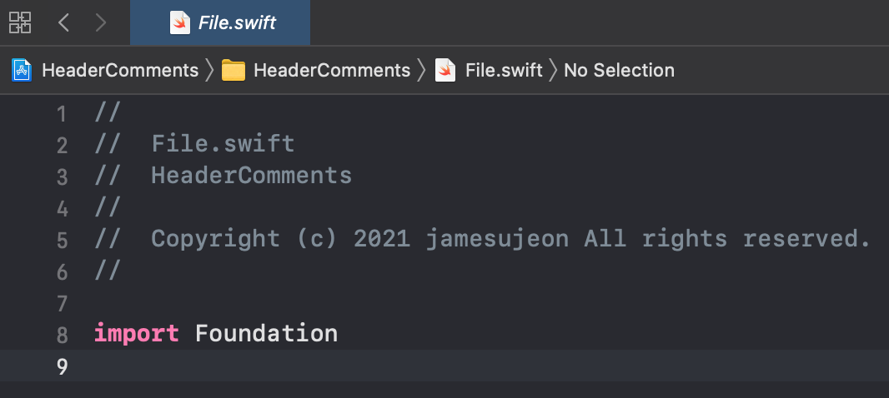

Xcode의 파일 헤더 주석 변경하기
TL;DR
IDETemplateMacros.plist파일을 생성해 매크로와 함께 일관성 있는 헤더 주석을 구성할 수 있다.- 팀 프로젝트 내의 공유를 위해서는 Project shared data 경로에
IDETemplateMacros.plist파일을 위치시키고 Git에 Push한다.
일관성 있는 파일 헤더 주석
일반적으로 프로그래밍을 하는 회사라면 사내 코딩 스타일 가이드가 이미 있거나 도입을 고민할 것이다. 그런 코딩 스타일 가이드에는 파일명이나 파일에 대한 일정한 규칙이 존재할 수 있다. 특히, 소스 파일에는 파일의 상단부에 저작권 등 각 파일에 대한 정보를 명시하는 경우가 많다.
파일의 상단부에 명시하는 주석을 Xcode에서는 File Header Text라 할 수 있는데, 여기서는 파일 헤더 주석이라 명칭한다. 이 파일 헤더 주석은 코딩 스타일 가이드에 따라 회사마다 다 다를 수 있으므로, 커스터마이징이 필요한 시점이 올 것이다.
Xcode에서는 일관성 있는 파일 헤더 주석을 설정할 수 있도록 설정 파일을 제공한다. 그 파일을 추가해서 파일 헤더 주석을 설정해보고, 각자 입맛에 맞춰 프로젝트에 적용하도록 하자.
여기서의 설정 방법은 Xcode 공식 문서 중 Customize text macros를 참고했다.
IDETemplateMacros.plist 추가하기
파일 헤더 주석을 설정하기 위해 IDETemplateMacros.plist라는 Property List 파일을 Xcode의 특정 위치에 놓아야 한다.
이 파일을 어디에 놓는지에 따라 해당 설정이 Xcode에 적용되는 범위가 다르다.
- Project user data: 프로젝트의 현재 유저 전용 데이터
<ProjectName>.xcodeproj/xcuserdata/[username].xcuserdatad/IDETemplateMacros.plist - Project shared data: 프로젝트 내 공유 데이터
<ProjectName>.xcodeproj/xcshareddata/IDETemplateMacros.plist - Workspace user data: 워크스페이스의 현재 유저 전용 데이터
<WorkspaceName>.xcworkspace/xcuserdata/[username].xcuserdatad/IDETemplateMacros.plist - Workspace shared data: 워크스페이스 내 공유 데이터
<WorkspaceName>.xcworkspace/xcshareddata/IDETemplateMacros.plist - User Xcode data: 현재 컴퓨터 유저의 Xcode 전용 데이터
~/Library/Developer/Xcode/UserData/IDETemplateMacros.plist
일반적으로 팀 프로젝트를 진행할 때, xcuserdata는 유저 전용 데이터이므로
.gitignore 파일에 항목을 추가해 Git에 공유하지 않는다.
팀원들이 공유하고자 하는 정보는 xcshareddata을 통해 Git에 공유한다.
따라서 사내 코딩 스타일 가이드를 따르기 위해서는 Project shared data를 이용하도록 하고,
CocoaPods를 사용한다면 워크스페이스를 이용하므로 Workspace shared data를 이용한다.
하지만, Project shared data에 세팅해도 워크스페이스에 적용되므로 Project shared data를 이용해도 된다.
Property List 파일은 특정 규칙을 지닌 XML 파일이므로,
다음 코드를 그대로 복사해 IDETemplateMacros.plist 파일을 생성하거나
Xcode를 통해 Property List 파일을 생성한 후에 이동시키면 된다.
1
2
3
4
5
<?xml version="1.0" encoding="UTF-8"?>
<!DOCTYPE plist PUBLIC "-//Apple//DTD PLIST 1.0//EN" "http://www.apple.com/DTDs/PropertyList-1.0.dtd">
<plist version="1.0">
<dict/>
</plist>
그리고 해당 파일을 Xcode로 열어 수정하면, Xcode에 설정 내용을 적용할 수 있게 된다.
파일 헤더 주석 맛보기
IDETemplateMacros.plist 파일을 Xcode로 열어 Root 아래로 FILEHEADER 키를 추가하고, 아무 값이나 String 값으로 넣어보자.
여기서는 Test라고 넣어 보았다.

그리고 IDETemplateMacros.plist 파일을 넣은 프로젝트에서 새로운 파일을 추가해보면, 다음과 같이 파일 상단부에 //Test라고 추가되는 것을 확인할 수 있다.

이제 본격적으로 꾸미고자 여러 줄을 넣고자 하면, Xcode를 통해서는 여러 줄을 수정하기가 불편한 것을 알 수 있다. 그래서 XML 파일을 직접 수정하는 것이 훨씬 편하다. 해당 파일을 VSCode 같은 다른 편집기로 열어보자.
그러면 다음과 같은 코드를 볼 수 있고, FILEHEADER 키 태그랑 동일한 레벨에 있는 string 태그를 통해 값을 설정하면 된다는 것을 알 수 있다.
1
2
3
4
5
6
7
8
<?xml version="1.0" encoding="UTF-8"?>
<!DOCTYPE plist PUBLIC "-//Apple//DTD PLIST 1.0//EN" "http://www.apple.com/DTDs/PropertyList-1.0.dtd">
<plist version="1.0">
<dict>
<key>FILEHEADER</key>
<string>Test</string>
</dict>
</plist>
개행도 넣어보고, 이것저것 작성해보면 헤더 주석이 어떻게 들어가는지 알 수 있다. 다음과 같이 작성하면 새 파일을 추가했을 때 생각했던 것처럼 보이지 않고 이상하게 보여진다.
1
2
3
4
5
6
7
8
9
10
11
<?xml version="1.0" encoding="UTF-8"?>
<!DOCTYPE plist PUBLIC "-//Apple//DTD PLIST 1.0//EN" "http://www.apple.com/DTDs/PropertyList-1.0.dtd">
<plist version="1.0">
<dict>
<key>FILEHEADER</key>
<string>Test
Test2
Test3
</string>
</dict>
</plist>

보는 것과 같이 첫 줄에만 // 문자열이 앞에 붙고, 그 이후부터는 일반 텍스트 취급을 하기 때문에 개행이나 띄어쓰기를 잘 작성해야 한다.
심지어 마지막 </string> 앞에 있는 띄어쓰기와 개행도 인식하는 것을 알 수 있다.
개행, 띄어쓰기, 주석 문자열을 적절히 넣어 작성한다면 다음과 같이 작성할 수 있다.
1
2
3
4
5
6
7
8
9
10
<?xml version="1.0" encoding="UTF-8"?>
<!DOCTYPE plist PUBLIC "-//Apple//DTD PLIST 1.0//EN" "http://www.apple.com/DTDs/PropertyList-1.0.dtd">
<plist version="1.0">
<dict>
<key>FILEHEADER</key>
<string> Test
// Test2
// Test3</string>
</dict>
</plist>

파일 헤더 주석 구성하기
기본적인 사용법을 알았다면, 이제 원하는 규칙대로 설정할 차례이다.
Xcode 공식 문서의 Text macro format reference와 Text macros reference를 보면, 주석을 구성하기 위해 필요한 정보를 어떤 매크로를 통해 얻을 수 있는 지 알 수 있다.
자세한 것은 위 링크에서 살펴보도록 하고, 여기서는 몇 가지 매크로만 예시로 사용할 것이다.
매크로의 앞 뒤에 _ 문자를 각 3개씩 추가해서 매크로를 사용할 수 있다.
- FILENAME: 현재 파일명
- PROJECTNAME: 현재 프로젝트명
- YEAR: 현재 연도
다음과 같이 위 매크로와 함께 저작권을 고정시키고자 개인적인 아이디를 직접 넣어 작성해 보았다.
1
2
3
4
5
6
7
8
9
10
11
12
13
<?xml version="1.0" encoding="UTF-8"?>
<!DOCTYPE plist PUBLIC "-//Apple//DTD PLIST 1.0//EN" "http://www.apple.com/DTDs/PropertyList-1.0.dtd">
<plist version="1.0">
<dict>
<key>FILEHEADER</key>
<string>
// ___FILENAME___
// ___PROJECTNAME___
//
// Copyright (c) ___YEAR___ jamesujeon All rights reserved.
//</string>
</dict>
</plist>

작성한 코드와 결과물을 비교해보면 어떻게 구성할 수 있을지 파악이 될 것이다.